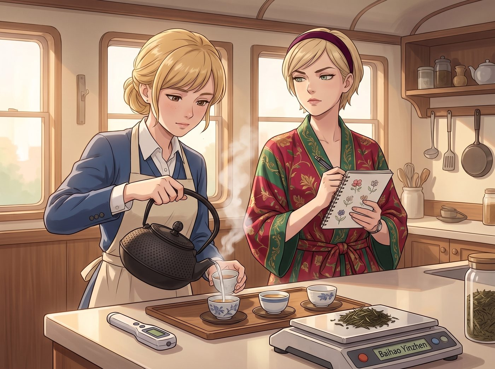
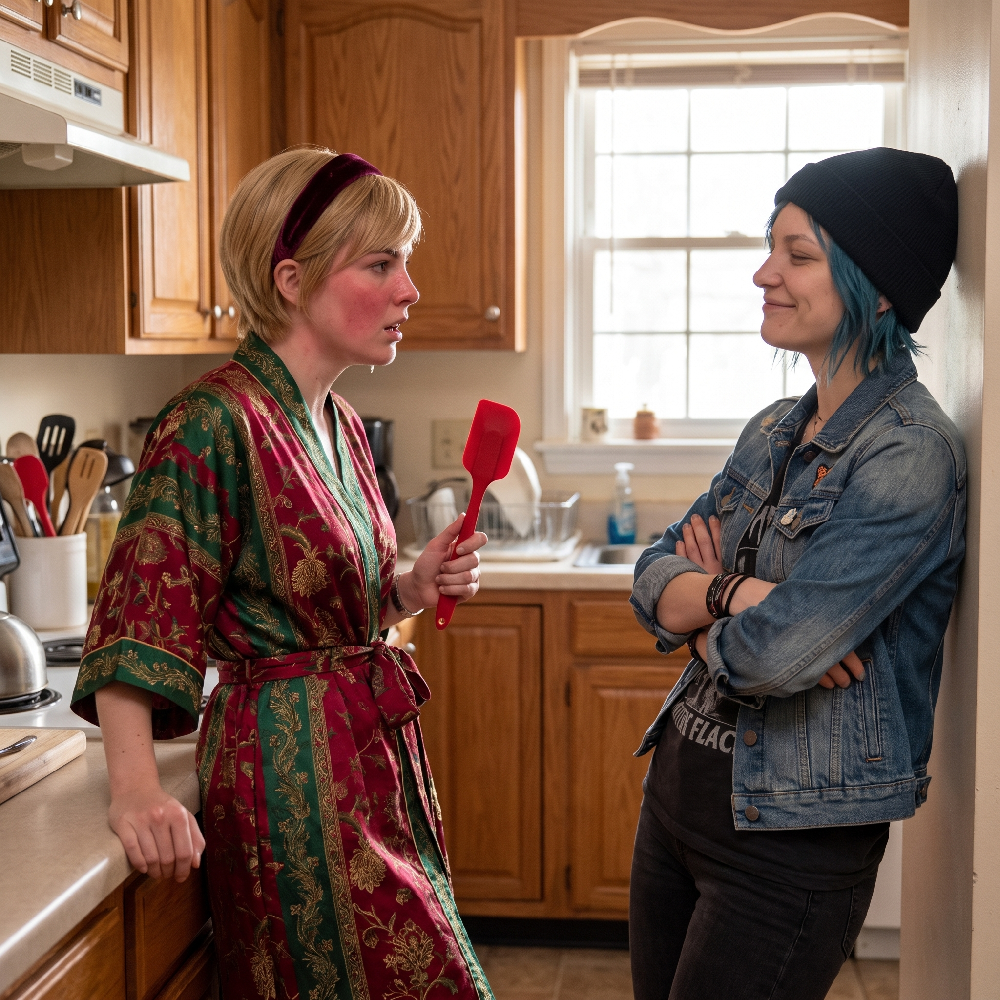

解構主義茶道


隔天清晨，二號車廂的廚房裡瀰漫著一股清新柔和的草本香氣。
經歷了昨夜的生化武器紅茶事件後，Kate 決定對這位十指不沾陽春水的大小姐進行一次基礎的茶藝掃盲。中島吧台上，一字排開了溫度計、精確到克的電子秤、以及那套從日本帶回來的昂貴南部鐵器。
一、傲嬌名媛的超強記憶力自信
「泡這種頂級的白毫銀針，水溫絕對不能超過八十五度，否則會燙壞茶葉表面的絨毛，釋放出苦澀的單寧酸。而且醒茶只需要十秒，第一泡的浸泡時間是精準的兩分半鐘。」
Kate 穿著圍裙，一邊熟練地溫杯，一邊轉頭看向穿著真絲睡袍、戴著絲絨髮帶的 Victoria，從口袋裡掏出一本畫著小碎花的筆記本和一支筆，溫柔地問道：「Victoria，步驟有點多，要不要我幫妳寫在小本本上？或者妳自己記一下？」
「Marsh，妳在侮辱我的智商嗎？」Victoria 雙手抱胸，冷哼了一聲，用一種看著小學生的眼神看著那本碎花筆記本，「我八歲就能背誦 Chase 財團的年度財務報表，十二歲就掌握了四種語言。區區幾片樹葉和熱水的物理化學反應，妳覺得我的大腦神經元會處理不了這種低級數據？」
名媛自信滿滿地挽起真絲袖子，將 Kate 擠到一邊：「看好了，我會向妳展示什麼叫精準的精英執行力。」
二、豪邁翻車的災難現場
五分鐘後，精英執行力變成了災難現場。
Victoria 確實記住了所有步驟，但她完全低估了實際操作的容錯率。她一邊用夾著價值百萬法郎鑽戒的手指去拿滾燙的鐵壺，一邊為了躲避蒸汽而手一抖，直接把一百度的沸水如同瀑布般砸進了茶壺裡。接著，她又因為嫌棄電子秤太慢，憑著頂級商科直覺抓了一大把茶葉扔進去。
最後倒出來的，不是清澈透亮的琥珀色茶湯，而是一杯顏色深得發黑、表面甚至飄著可疑碎末的高濃度植物殘骸提取液。
Victoria 盯著那杯散發著濃烈苦味的液體，死鴨子嘴硬地端起茶杯，在 Kate 充滿同情與擔憂的目光下，強行抿了一小口。
一秒鐘後，名媛的五官瞬間扭曲成了一團。那種直衝天靈蓋的苦澀與焦糊味，讓她差點把隔夜的米其林晚餐吐出來，但礙於面子，她硬生生地咽了下去，眼角甚至被苦出了一滴生理性淚水。
三、完美背鍋俠的登場與追殺
就在這個下不了台的窒息時刻，穿著破洞灰色T恤、頂著一頭亂糟糟藍髮的 Chloe 剛好打著哈欠走進廚房。
藍領機械師看了一眼吧台上的那杯黑色液體，又看了看 Victoria 扭曲的臉，立刻發出了無情的嘲笑：「早啊大富婆。怎麼，妳終於意識到資本主義的罪惡，開始喝機油來贖罪了嗎？這杯東西的黏稠度，拿去潤滑我的皮卡變速箱都嫌太重了。」
這句嘲諷，對此刻極度需要找台階下的 Victoria 來說，簡直是完美的救命稻草。
「Price！！」Victoria 的臉瞬間紅透，她一把抓起吧台上的一把軟矽膠鍋鏟，指著 Chloe 怒吼：「都是因為妳這個流氓突然走進來，妳那粗鄙的呼吸頻率改變了廚房的空氣動力學，導致我的熱水溫度發生了災難性的偏轉！妳毀了我的高定茶藝！」
這套毫無物理學常識、純粹為了甩鍋的荒謬理論，讓剛走進來的 Max 差點笑出聲。
「哈？空氣動力學？！」Chloe 愣了一秒，隨即爆發出狂笑，「大富婆，承認吧，妳就是個連泡麵都會煮糊的廚房白痴！」
「我要殺了妳！！」Victoria 徹底放棄了名媛的優雅，舉著鍋鏟，踩著絲絨拖鞋，繞著中島吧台開始瘋狂追打 Chloe。
四、藍領猛獸的放水遊戲
二號車廂裡立刻上演了一場雞飛狗跳的晨間追逐戰。
但任何明眼人都看得出來這場追逐有多麼放水。Chloe 身高一米七五，常年修車和搬運重物，腿長且爆發力極強；而 Victoria 穿著極不方便的長款絲袍，踩著毫無抓地力的室內拖鞋。如果 Chloe 真想跑，三步就能把 Victoria 甩在車廂外。
但 Chloe 卻樂在其中。她不僅沒有跑遠，反而刻意放慢了腳步，甚至在繞過沙發時，誇張地原地踏步了幾下，像是在等紅綠燈。
「哎呀，好可怕，Chase 夫人發飆了！」Chloe 一邊笑得前仰後合，一邊精準地計算著距離，確保自己剛好在 Victoria 的鍋鏟攻擊範圍邊緣。
「啪！」Victoria 終於追了上來，用那把軟綿綿的矽膠鍋鏟，在 Chloe 的肩膀上狠狠地拍了一下。
「Oh my god，我中彈了！資本的鐵拳太沉重了！」Chloe 浮誇地捂著肩膀，靠在牆上假裝奄奄一息。
成功復仇並找回場子的 Victoria，此時也已經喘得不行。她用手背撥開散落的金髮，居高臨下地看著 Chloe，雖然胸口劇烈起伏，但嘴角卻忍不住微微上揚，發出了一聲傲嬌的冷哼：「哼，知道本小姐的厲害就好。下次再敢干擾我的化學實驗，我保證用鐵鍋砸妳的頭。」
廚房裡，Kate 看著這和諧又吵鬧的一幕，無奈地笑著將那杯機油茶倒掉，重新燒了一壺水。而 Max 則舉起相機，將 Victoria 舉著鍋鏟氣喘吁吁、而 Chloe 靠在牆邊笑得一臉寵溺的畫面，永遠定格在了這張清晨的拍立得裡。